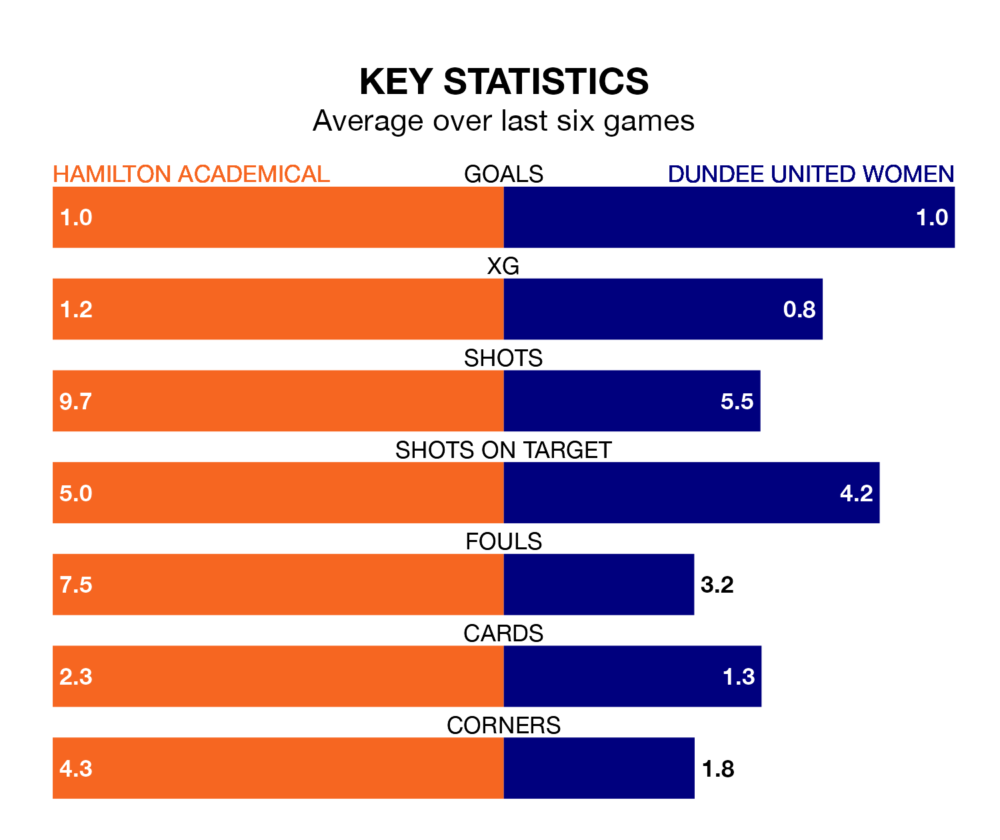

Wednesday's late match at the ZLX Stadium sees the league's two bottom sides face each other, as rock-bottom Hamilton Academical host Dundee United Women.
Hamilton Academical have picked up 10 points from their first 10 SWPL 1 games, with two wins and four draws.
That is the same number of points as Dundee United have collected, having won three and drawn one.
Hamilton Academical are in bad form in SWPL 1, with one win and a draw from their last six games.
But with no wins and six losses over that period, Dundee United's form is even worse – they have taken no points from 18, compared to the Accies's four.
In the last 10 years, Hamilton Academical and Dundee United have played each other on eight occasions. Hamilton Academical won two of them, Dundee United three, and they drew three times.
On average, the Accies scored 2.4 goals and Dundee United 2.0 in those matches.
Their last meeting was on January 28, when Hamilton Academical won 4-1 away.
With 20 goals in 25 games so far this season, the hosts are the league's lowest scorers with 0.8 goals per game. And they are conceding more than average, letting in 97 goals at a rate of 3.9 per game.
The away side are also below average scorers, with 0.9 goals per game, compared to a league average of 2.1. They have conceded 3.7 goals per game.
Hamilton Academical's last match was on Sunday, a 3-2 loss against Aberdeen, with Josephine Giard and Melissa Reid getting the goals for the Accies.
Dundee United lost 2-1 against Motherwell Women last time out, also on Sunday, with Georgie Robb on the scoresheet.
Updated: 11:31 (UTC), 15/04/24